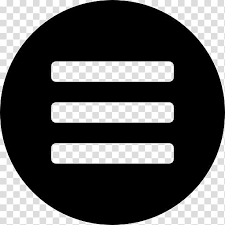
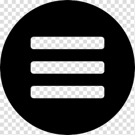

History
The history of Rolex and Swiss watchmaking are inextricably linked.
Pioneer in the development of the wristwatch, Rolex is at the origin of numerous major watchmaking innovations, and has registered over 500 patents in the course of its history.
Rolex designs, develops and produces in-house all the essential components of its watches, from the casting of the gold alloys to the machining, crafting, assembly and finishing of the movement, case, dial and bracelet.
The Rolex crown, the logo and symbol par excellence of the brand, was registered in 1931.
It appeared for the first time on Rolex dials during the 1930s, then on the winding crown in the early 1950s. It also began to replace the 12 o’clock hour marker on some dials, such as on the Datejust, in the form of small 18 ct gold appliques.